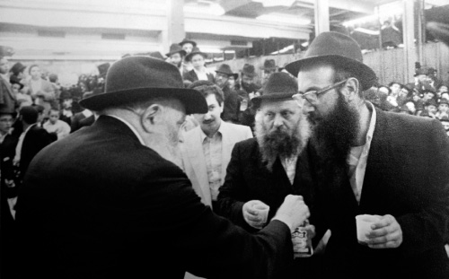

As a Father Who Shows Mercy to His Children
Rabbi Shneur Zalman Eliyahu HaKohen Hendel, executive director of “Ohr Menachem” Educational Institutions in Tzfas, was privileged to receive constant guidance from the Rebbe, Melech HaMoshiach, at every major turning point in his life. In a special interview in commemoration of his fortieth year of
Translated by Michoel Leib Dobry

Last month, as we were all preparing for the upcoming Tishrei holiday season, I paid a visit to the home of Rabbi Shneur Zalman Eliyahu HaKohen Hendel, executive director of “Ohr Menachem” Educational Institutions in Tzfas, to hear about the numerous private audiences with the Rebbe he has been privileged to have during his life. In addition, I came to get a first look at dozens of letters and answers he received from the Rebbe on a variety of issues since he came of age and throughout the years of his shlichus. These letters are filled with detailed instructions and advice.
Rabbi Hendel, the eldest son of the gaon Rabbi Yitzchak HaKohen Hendel a”h, rav of the Chabad community of Montreal, was privileged to have his first yechidus with the Rebbe for Shavuos 5711, when he was only six years old. At the age of twenty-four, he married his wife Rebbetzin Chaya Rochel, the daughter of the Chassid R’ Yisroel Tzvi HaLevi Heber, and took up residence in Kfar Chabad. He later joined the second group of Chassidim to settle in Nachalat Har Chabad. Afterwards, together with Rabbi Lipa Kurzweil, he experienced “and your beginning shall be small” with the establishment of Chabad institutions in Arad. The Rebbe eventually sent him to join Rabbi Aryeh Leib Kaplan to restore the ancient Chabad community of Tzfas.
Throughout these years, the Rebbe provided instructions to Rabbi Hendel at every step along his path in life. In this exclusive interview, Rabbi Hendel gave us a rare look at some of the correspondences he received from the Rebbe, including some of his personal notes from private audiences held in 770. “When you enter the Rebbe’s chamber, you feel that he’s only with you, listening to you – and only your request, your question, and your personal struggles are placed before the Rebbe.”
THE REBBE: WHILE HE’S ONLY A BOY, HE SHOULD STILL PARTICIPATE IN FARBRENGENS
As mentioned earlier, the first time that Rabbi Hendel was privileged to go in for yechidus was during Shavuos 5711. “My father traveled to 770 for Simchas Torah 5711, and I was planning to join him for the trip. However, when I caught a bad cold, my parents decided to leave me behind in Montreal. The next opportunity was not long in coming. As the rav of the Chabad community in Montreal, my father went to Crown Heights for the following Shavuos, and I came with him as a boy of only six years old. During the farbrengens, I stayed at the home of our hosts.
“Back in those days, it was not customary to bring small children to farbrengens, and I would only come into 770. At the yechidus that my father had after Yom Tov, the Rebbe asked him, ‘Where was your son?’ My father replied that since it was not customary to bring children to farbrengens, he had left me at home. The Rebbe looked at me and asked that whenever I came to 770 in the future, I should make certain to participate in farbrengens. During the yechidus, the Rebbe tested me in Mishnayos.”
TRAVELING FOR A SHIDDUCH: “WHAT GREATER SHLICHUS IS THERE?”
When Rabbi Hendel reached marriageable age in 5729, his family received several offers for shidduchim, including one from Eretz Yisroel. “The family questioned whether I should travel to Eretz Yisroel or if the girl should come to Chutz La’Aretz. We raised the issue before the Rebbe, and the instructions were that I should go to Eretz Yisroel.
“Before my departure, shortly after Yud Shvat, I went in for a yechidus with the Rebbe. In those days, it was customary for a Chassid making a lengthy trip to accept some shlichus upon himself. I wrote to the Rebbe that I was about to travel to Eretz Yisroel, asking if the Rebbe had a shlichus for me.
“The Rebbe related first to the subject of studying for rabbinical ordination. He said that since I had already learned poskim, etc., it would be appropriate for me to receive smicha as a rav and a dayan (rabbinical judge).
“With regard to shlichus, the Rebbe said, ‘What greater shlichus can there be than the shlichus you will be traveling on now? This is a matter relevant in both general and individual terms.’
“Afterwards, the Rebbe added, ‘With regard to the personal shlichus, give over things that you heard at the Yud Shvat farbrengen and b”n what will be discussed on the upcoming Shabbos.’
“At the conclusion of the yechidus, the Rebbe gave me a bracha for success in all my endeavors.
“I took my tape player with me on the flight, along with a recording of the Yud Shvat farbrengen. I also brought a ‘hanacha’ from the Shabbos farbrengen, and I gave them both over at various opportunities during my stay in Eretz Yisroel.
“The shidduch eventually proved successful, and we decided to establish a Jewish home together. We naturally wanted to receive the Rebbe’s answer as quickly as possible. There were no fax machines or Internet as we have today, and all correspondence was sent via regular mail. Yet this was a process that could take a very long time.
“The Heber family sent the letter to my future brother-in-law, Rabbi Shmuel HaLevi Heber, and I asked my father to bring the letter into the Rebbe. In this way, we hoped that the answer would come quickly. While the Rebbe eventually issued a clear and unequivocal answer through the secretary, he also asked that we write a letter ourselves, not through someone else. We sent a letter via regular mail, and a few days later, an answer from the Rebbe arrived with his consent for the shidduch and a bracha that it should be at a good and auspicious hour. The wedding was set for Chai Elul.”
A BRACHA FROM THE REBBE “THAT WE SHOULD SEE ONE ANOTHER SOON”
“At the end of the Sheva Brachos, we traveled to 770, and at the conclusion of the Tishrei holidays we went in for yechidus. I asked the Rebbe for a bracha for our marriage and a bracha to learn in the kollel in Kfar Chabad. This was the first time my wife had ever been before the Rebbe, and she was very emotional. The Rebbe blessed us that our hearts’ wishes should be fulfilled, and then he gave me a bracha for success in my kollel studies.
“At this point, the Rebbe turned to the subject of my wife’s work. She had been working at the time as a teacher in the Chabad school in Lud, teaching immigrants from Soviet Georgia. The Chabad school in Lud accepted immigrant girls for the purpose of preventing them from getting swept up by the permissive atmosphere existing in Eretz Yisroel. The Rebbe gave her a bracha, adding that based on what he had heard about the new immigrants from Soviet Georgia, the children have a great deal of influence over their parents. The reason is that they’re simple people who aren’t very knowledgeable about Yiddishkait. Thus, when a teacher comes and speaks to the girls’ mothers about Torah and mitzvos, it can change the entire home, especially as the girls themselves begin to walk in the path of Torah.
“The Rebbe asked if we had received the letter he had sent us for the wedding. When we replied that we had not, the Rebbe shook his head in amazement. He said that he simply didn’t understand why we hadn’t received the letter. Throughout the entire yechidus, the Rebbe blessed us that we should build an everlasting home in Israel, illuminating our surroundings with the light of Torah and mitzvos that will have a significant influence upon ourselves. I clearly remember the entire event and all the words that were uttered. At the conclusion of the yechidus, I asked the Rebbe for a bracha that we should again see one another soon, and the Rebbe gave a broad smile and said, ‘Oif a gutten ofen’ (in a good way).
“In the meantime, we returned to Eretz Yisroel, and according to our plans, I went to learn in the kollel of Kfar Chabad, headed by Rabbi Avraham Hirsch HaKohen.”
WHY DOES IT BOTHER YOU THAT THERE’S NO MASHGIACH?
In preparation for the auspicious day of Yud Shvat 5730, the kollel held a raffle for a trip to the Rebbe, and Rabbi Hendel won the raffle. Shortly after his return from the United States, he again traveled to the Rebbe – a most unusual occurrence in those days. He attributed this to the Rebbe’s bracha when he asked that they should see one another again soon: “Oif a gutten ofen.”
When Rabbi Hendel returned to Eretz Yisroel, he discovered that there was a great “shturem” in Kfar Chabad about settling in Nachalat Har Chabad, which the Rebbe had founded the year before. A minyan of avreichim had already moved into special residential units prepared by the Israel Ministry of Housing, and Rabbi Efraim Wolff was looking for another ten kollel students to volunteer their time to work with the new immigrants coming to Kiryat Malachi in droves. The Hendels joined this shlichus.
“I remember those moments as parents parted from their children, young avreichim and their wives, as they left for Kiryat Malachi. There was much hugging and crying. I stood on the side, bewildered by all the sobbing. After all, they were only going forty minutes away from home! While the shlichus to Kiryat Malachi was a whole new innovation, I had just come to Eretz Yisroel from overseas, and that seemed far less daunting to me.
“Two years later (5732), Rabbi Efraim Wolff informed all the avreichim that he could no longer finance the kollel studies and they would have to make arrangements for their own parnasa. There were those who found gainful employment, while others temporarily continued their studies in the kollel at nearby Moshav B’nei Re’em. They were looking for new students there and even agreed to pay. Numerous avreichim, myself included, joined this kollel.
“With regard to the kollel in Kiryat Malachi, I recall an interesting answer from the Rebbe that I received when I went in for yechidus in 5732. A problem existed in the kollel at the time: There was no Rosh Kollel, and this fact bothered the students. Some of them even registered a formal complaint.
“When I went in for yechidus, I raised the issue before the Rebbe. He didn’t seem pleased by this, to say the least. The Rebbe reacted with puzzlement and said: ‘After mature individuals learn in kollel for a year and a half, why are they so bothered and make a tumult because there’s no one standing over them? This is a strange mode of conduct.’
“During this yechidus, the Rebbe told me that I have to start thinking about my post-kollel arrangements. He said that I should consider employment or shlichus offers from a variety of sources, i.e., whether from Eretz Yisroel or even from the United States. The Rebbe noted that since I was now in the U.S., it would be also appropriate to hear suggestions from here.
“‘When you arrive in Eretz Yisroel,’ the Rebbe continued, ‘you should also hear offers from there as well, and then you can decide where you want to settle.’ In response to another question, regarding whether we should buy a home in Kfar Chabad or Nachalat Har Chabad, the Rebbe replied that it all depends upon where we settle.”
ON PLANS TO ESTABLISH A COMMUNITY IN ARAD: “IN COORDINATION WITH THE GOVERNMENT MINISTRIES”
“On Yud-Alef Nissan that year, the Rebbe spoke about the gift he wanted for his birthday: the establishment of seventy-one institutions during the coming year. As a result, the Committee for the Founding of Seventy-One Institutions was established for the purpose of coordinating this effort.
“During those years, the concept of shlichus had yet to catch on in Eretz Yisroel. Only in Nachalat Har Chabad was there some form of shlichus outside of the existing Chabad centers. Together with another friend, Rabbi Lipa Kurzweil, Lubavitch Youth Organization director in Kiryat Malachi, we thought about creating another Chabad neighborhood in Arad, a city lacking all signs of ultra-Orthodox Judaism. The plan was to establish a kollel in Arad, in the hope that when ten avreichim would come to settle in the city, this would lay the groundwork for a new chassidic community. We got in touch with the national Tzach director, Rabbi Yisroel Leibov, raised the idea with him, and requested if he would ask the Rebbe. While the Rebbe did give his consent, he also instructed that we should not come spontaneously. Instead, it should be done in an orderly manner in coordination with the municipal authorities, making it possible to receive apartments from the Israel Ministry of Housing.
“Our first meeting with local officials took place on Erev Chai Elul. We met with the head of the city council and future minister of finance, Mr. Avraham (Beige) Shochat, and submitted our proposal to him. We were accompanied by Rabbi Yisroel Leibov, Rabbi Zushe Wilomovsky, Rabbi Avraham Godin, Rabbi Baruch Gopin, and Rabbi Kugel from the TLAT Students For Students Organization (an association for the purpose of creating kollels throughout Eretz Yisroel, founded by R’ Shalom Shechne Rotem, one of the leaders in the Poalei Agudat Yisroel Party, who had ready access to the Israel Ministry of the Interior). At the end of this meeting, Mr. Shochat offered his cooperation, and Rabbi Kugel agreed to finance the stipends for those kollel students that we would bring.
“During that year, a small crack opened in the Iron Curtain. Numerous Jews from the Soviet Union arrived in Eretz Yisroel, and many of them were sent to Arad. With the cooperation of the local religious council, we organized Jewish activities with new immigrants and local residents throughout the year.
“In the end, despite considerable effort and correspondences and meetings with many people, we failed to acquire residential units from the Housing Ministry. While we worked with increased vigor, the Israeli bureaucracy became an endless source of aggravation, not to mention the fact that there were many people in Arad who simply didn’t want ultra-Orthodox Jews settling there. While we originally had ten avreichim, when it reached a more practical stage much later, some of these young men had already made other arrangements elsewhere. Thus, when we finally received the necessary government permits, we discovered that a sizable portion of our original group was no longer with us.
“Even before this stage, there were hints from the Rebbe that this would be no simple task. However, for some reason, the Rebbe wanted us to continue, apparently in order to ‘prepare the ground’ for the shluchim who would eventually come later.
“In mid-5732, I sent a letter to the Rebbe, in which I spelled out in detail all the difficulties we had encountered along the way. The clerks in the Arad municipality placed one condition after another upon us. Several of them clearly told us that they didn’t want the ultra-Orthodox in their town throwing rocks at them when they’re driving on Shabbos…
“I received an answer on the 25th of Elul 5732. Regarding my question whether we should rent the apartments on a private basis, letting each avreich look for his own place as they would anywhere else in Eretz Yisroel, thereby removing the need to wait for the government permits, the Rebbe replied with the word: ‘Mufrach’ (groundless). The Rebbe specifically wanted the Housing Ministry to give everyone apartments. Regarding my claim that if we applied a little pressure, we could get the kollel started as early as Cheshvan, as the Rebbe shlita wanted, the Rebbe gave an interesting response that I only understood after the fact.
“The Rebbe crossed out the words ‘month of Cheshvan,’ and he wrote that it should be in an orderly and practical manner – ‘and not by initially concealing the real situation, because the government ministries will eventually cause a cancellation and it won’t come to fruition.’ The Rebbe was referring to the idea of commencing the project without official government approval. However, the Rebbe thought otherwise: he wanted everything to be done properly in order that the relevant offices would authorize the residential units. Under no circumstances should we bypass the local authorities.
“I was privileged to receive another interesting answer on the 7th of Teves 5733. The Rebbe wrote that since resolving the challenges in Arad would take some time, we should use the interim period to look for something else in Eretz Yisroel, and if such efforts proved unsuccessful, I should go to Chutz La’Aretz. I understood from this answer that the Rebbe was perhaps asking us to put a halt to our efforts in Arad.
“It was only around the Pesach holiday that we finally received the government permits. By that time, however, it turned out that a sizable percentage of the avreichim had already found other places to settle. As a result, the plans for the Chabad community in Arad were shelved.”
THE REBBE SUGGESTS: TRAVEL TO TZFAS!
“After it already became apparent that the Arad option was no longer viable, I traveled to 770 for the Shavuos holiday and went in for yechidus.
“I asked the Rebbe what I should do now, and I placed before him the various offers I had received recently.
“When I had finished speaking, the Rebbe said that he was about to send an avreich from New York to Tzfas. The reason he was sending him specifically from New York was to create a bigger ‘shturem’ with a fresh face. The Rebbe added that he eventually planned to restore the ancient Chabad settlement in Tzfas to its original greatness and prominence, noting that representatives of the local municipality had promised to give their help. He had given permission to take several avreichim there to establish a kollel, build a mikveh, start a Talmud Torah – or as Israeli education officials called it, a ‘government-sponsored religious school’ – and with G-d’s help, I would have much success. He mentioned how the city had two rabbinical authorities who were quite busy with their own affairs, and if we didn’t interfere with them, we could accomplish a great deal.
“This was the longest yechidus I ever had. The Rebbe added that he wanted to make a community in Tzfas; not like Kfar Chabad, but similar to Nachalat Har Chabad.
“The Rebbe explained the proposal to me, and he suggested that I join the efforts to re-establish the Chabad community of Tzfas. The Rebbe noted that since I was already in Eretz HaKodesh, it will be much easier for me to help there. However, he emphasized that while this new avreich was younger than I was, all instructions would pass through him.
“The Rebbe said that before giving a positive reply to this proposal, I should consult with my family and relatives, in order that no one should complain later that there was no need to travel to faraway Tzfas, when I could easily do something here…
“During this yechidus, the Rebbe also spoke with me about Arad and said that I should neither be saddened nor take responsibility for the unsuccessful efforts. He added that ‘this has no relevance to us; we do everything we possibly can.’ If anyone was to blame for the failure of the shlichus, it was the local municipal authorities who didn’t want an ultra-Orthodox community in their city.
“As mentioned, since I came into yechidus with several shlichus offers that I had previously received, the Rebbe agreed to respond to each of the proposals. Among the proposals was that I should found a Chabad House in Montreal. The Rebbe’s reply was that if I should check and see if this poses a problem of hasagas g’vul.
“I told the Rebbe that this was not a case of hasagas g’vul, since this will be a brand new operation. The Rebbe smiled and said, ‘I know Montreal, and you know Montreal…’ I had another offer from Guatemala. Some friends of mine had been there on ‘Merkaz Shlichus,’ and the leaders of the local Jewish community had asked them to arrange for a permanent shliach. During that entire year, while I had been busy attempting to set up the kollel in Arad, I maintained correspondence with my friends who had been in Guatemala. I asked the Rebbe regarding this offer, but he replied that this was not suitable for a young couple.
“At the conclusion of the yechidus, I understood that the Rebbe was directing us to Tzfas to establish a kollel there and to conduct activities.”
KEEPING THE SHLICHUS TO TZFAS A SECRET
“After consulting with my family, we decided that this was the will of the Rebbe, and we were prepared to accept the challenge. We still didn’t know the identity of the young man the Rebbe was sending ahead of us, and with whom we would have to work. We waited in Crown Heights for the meantime until the Rebbe instructed us what to do. When we told the Rebbe that we accepted the proposal, the secretaries asked us to keep it a secret for the time being.
“Then one day, I met R’ Leibel Kaplan, who was then a young avreich, as he was walking through the streets of the neighborhood. We had been friends since the days when we learned together in the Montreal yeshiva and worked together at the summer camp. Everyone had been whispering among themselves about the Kaplans’ imminent shlichus, but no one knew where they were going. When we met in Crown Heights, we began to talk. Among the things we discussed was the fact that the Rebbe had wanted shluchim in Tzfas for some time, but it had proven most complex for the Israelis. He listened and then concluded the conversation by saying, ‘Soon they’ll be traveling to Tzfas.’
“I realized at that moment that he was the avreich the Rebbe had designated for Tzfas. I told him about the yechidus I had, and while he told me that he had received an answer from the Rebbe in this direction, he still didn’t know exactly where things were holding. He was now waiting to receive further instructions via the Rebbe’s secretariat.
“During that summer, I stayed with my wife and children in the United States and Canada (at my parents’ home). On Erev Rosh Chodesh Elul, we went in for yechidus before our trip back to Eretz Yisroel, and in continuation of our previous yechidus, the Rebbe again spoke about the shlichus in Tzfas.
“Since we didn’t know when we would have an opportunity to visit the Rebbe again after returning to Eretz Yisroel, and we desperately wanted to stay in 770 for Tishrei, we asked the Rebbe about this during the yechidus. The Rebbe said that while my wife and children could stay, it’s possible that I would receive word that I would have to go right away.
“A few days later, Rabbi Chadakov informed me that I could stay, but I might not receive my expected salary from the Tzfas kollel for Elul and Tishrei. This was less troubling to me, and I stayed in Beis Chayeinu.
“That year on Yom Kippur, when war suddenly broke out in the Middle East, everyone clearly understood why the Rebbe wanted to found a community in Tzfas even before the Tishrei holidays. The feeling was that the Rebbe had hoped to stop the forward movement of the Syrian armies, which had temporarily retaken the Golan Heights within the first twenty-four hours of hostilities. The shluchim who were in Tzfas at the time did much work with the soldiers on the battlefront.
“We had planned to travel immediately after Simchas Torah, but the war had caused delays in available flights. At the first opportunity, we boarded a flight and arrived in Eretz HaKodesh.”
THE REBBE: FUNDRAISING IS A TEMPORARY MATTER
“After nine months of learning in the Tzfas kollel, Rabbi Kaplan suggested that I found the institution of my choice, while raising money to provide for its financial support.
“I decided to focus my efforts on education, and I began to work on establishing Tzfas’ first Chabad kindergarten. Administering the kindergarten demanded operating budgets, and I realized that I would have to deal with fundraising. I spent the Sukkos holiday in 5735 with the Rebbe, and at the conclusion of Yom Tov, I was privileged to go in for yechidus. I wrote to the Rebbe that I had begun to establish a new educational institution, but I didn’t know if I had the wherewithal or ability to collect donations. The Rebbe replied that I should consult with colleagues in the field, adding that ‘every person is close and partial to himself, and you can know if this will be successful for you or not.’ I said that I had a hard time with this, for since I was collecting money for an institution that I was running, it would appear that I was raising the funds for myself. However, the Rebbe rejected this line of thinking and said that this matter was merely a temporary one, noting that the ultimate purpose is not fundraising, rather what is done afterwards with the funds raised. The Rebbe dispelled my concerns and gave me numerous brachos. I now felt that I could meet this responsibility. At the conclusion of the yechidus, the Rebbe told me that Tzfas is close to Miron, and it was possible to achieve a great deal there. He added that there was enough room there for another two or three avreichim to engage in activities on the premises.
“Around this time, a tragedy occurred in Crown Heights that stunned the community: The mother of the Pinson family was struck and killed by a passing motorist. I was friendly with Rabbi Yosef HaLevi Wineberg, of blessed memory, and when he met me then and I told him about my new shlichus, he suggested that I go to the Pinson family to offer my condolences and propose that they dedicate a building in her memory. The only building that Chabad had in Tzfas at the time was the Tzemach Tzedek Synagogue, which had begun recent renovations on the building. As a result, there was a prevalent need for another suitable facility.
“To be quite honest, this was not an easy thing for me to do. While I had no experience in this whatsoever, I embarked on this mission with kabbalas ol. I offered my condolences, but I didn’t dare say a word on the subject. Then, Mrs. Pinson’s son, R’ Nachum, came up to me and said that he wanted to speak with me privately. He then surprised me by suggesting that we open a free loan fund in Tzfas in her memory. As I listened to his proposal, I felt that this was a clear sign from Heaven. I proceeded to make another suggestion: Tzfas does not have an organized facility for Chabad community activities. Inasmuch as we wanted our community to grow and prosper, we required a suitable building, sufficiently large to serve as the center for Chabad activities in Tzfas.
“He requested a little time to consider the offer, and in the meantime, the family asked the Rebbe about it. In his reply, the Rebbe said, ‘The matter is correct,’ adding they should construct a new building as opposed to buying an existing facility. This was the Rebbe’s request, and we immediately established a committee to expedite the project. Together with R’ Yehoshua Pinson, we visited the homes of friends throughout New York City, asking each of them to make a one thousand dollar donation.
“This marked my initiation into the world of fundraising. As part of the committee’s activities, I remained overseas until the end of Cheshvan. My wife wanted me to return to Eretz Yisroel, but we first had to collect the money from all those who pledged contributions. I went in again for yechidus, and I asked the Rebbe if I should return to Eretz Yisroel now and come back on another occasion, or if I should stay until we collect all the money? The Rebbe replied that it would not be appropriate to go back now. It would be preferable to remain until the shlichus would be completed.
“The resulting facility was the first Chabad House in the Old City of Tzfas. During those early years, I also served as local Tzach director, while we continued our work in establishing the new educational institutions.
“Early in the Mem’im (eighties), it was decided to create a Talmud Torah in Tzfas in the spirit of Chabad. The number of community members was increasing, and its circle of supporters was also growing. Rabbi Kaplan sent a letter to the Rebbe, requesting his bracha and consent to begin this project. The Rebbe replied that we must make certain that our children receive the best possible education. However, he also wanted that all Tzfas children could learn in this institution, while our own children would receive a better education after school hours and not in a school framework. All this was connected to what the Rebbe had said in yechidus about a government-sponsored religious school.”
“Ohr Menachem” Chabad Educational Institutions in Tzfas, which began in 5735 with one kindergarten class, has developed over the years into a tremendous empire of institutions for Jewish boys and girls, providing education to approximately two thousand students (may they increase in number). A more detailed article on these institutions will appear, G-d willing, in an upcoming issue.
DISCUSSION AMONG THE INSTITUTIONS
Rabbi Hendel shared with us another interesting episode that he experienced during a yechidus in 5734, a year after he arrived in Tzfas with his family.
“When people used to go in for yechidus, they would first write out their questions for the secretaries to submit to the Rebbe. However, when I went in, the Rebbe told me that he had not received my letter, and I unfortunately didn’t have a copy. The Rebbe then began to give me a bracha for success in all matters of public activities, adding that I should make certain that there will be several institutions, particularly in Tzfas. Furthermore, since what’s good for one institution is not necessarily good for another, there must be communication and interaction between the various institutions.
“The Rebbe spent a few minutes instructing me on how the institution directors must run their respective mosdos operating in the same city in an aura of cooperation while maintaining the distinction between them.
“I thereby learned a fascinating lesson directly from the Rebbe on public activities.”
Nosson Avrohom. "As a Father Who Shows Mercy to His Children." Beis Moshiach, no. 853 (October 23, 2012).